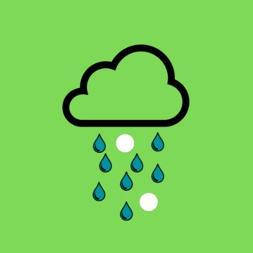
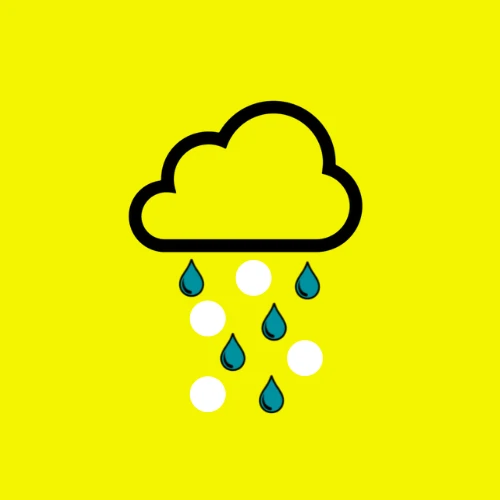
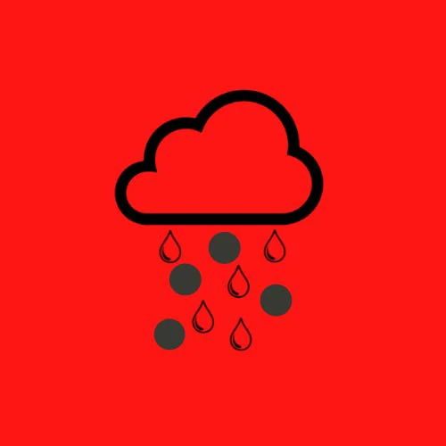

Autocontingencias
Leandro Fino
Franco Castro
Facundo Lattandi
Tipos de alertas
Alerta verde

Alerta amarilla

Alerta roja

A tener en cuenta
- El bot detecta tormentas para todo el oasis sur, puede ser posible que no moleste en su ubicación, y también que por un cambio de vientos, termine siendo un problema.
- Lo mejor es parender a leer el radar por cuenta propia ya que el algoritmo puede fallar, no todas las alertas significan que precipitará granizo